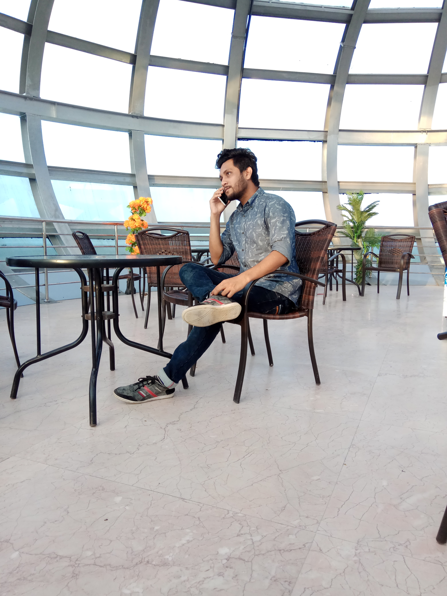
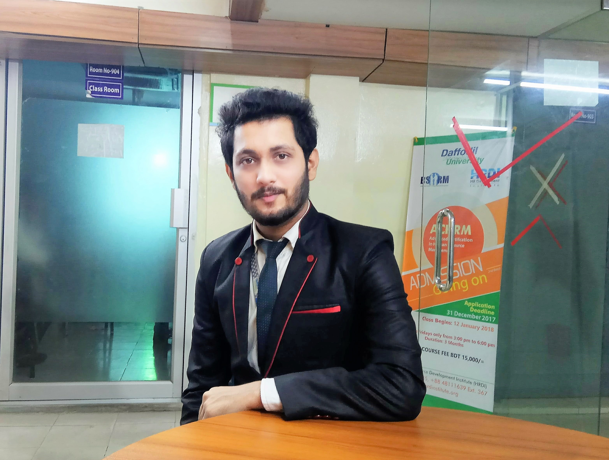
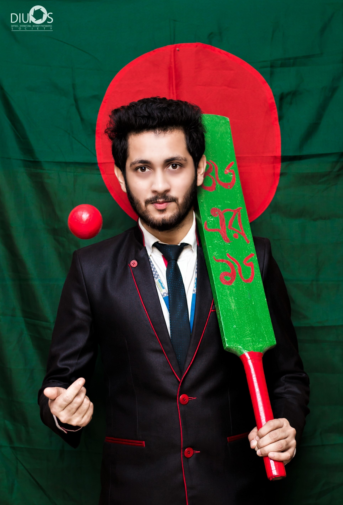

The Walk
The walk to the Pulpit Rock will take you approximately two hours, give or take an hour depending on the weather conditions and your physical shape.

 Sana is the main protagonist of the series. He left Sakuranomori during his childhood, and during the beginning of the series he comes back to live by himself in the apartment building owned by Aoi's parents.
He apparently had a crush on Nanaka before he left and still holds those feelings for her. He used to play the piano, but he forgot every song except the song Nanaka wrote for him which he says is very important to him. He has a fear of blood because
he tried to commit suicide during his middle-school years due to constantly being bullied. At the end of the anime series, Sana proposes to Nanaka and she accepts by wearing the proposal ring during her concert. Sana is the main protagonist of the
series. He left Sakuranomori durhe accepts by wearing the proposal ring during her concert.
 Sana is the main protagonist of the series. He left Sakuranomori during his childhood, and during the beginning of the series he comes back to live by himself in the apartment building owned by Aoi's parents.
He apparently had a crush on Nanaka before he left and still holds those feelings for her. He used to play the piano, but he forgot every song except the song Nanaka wrote for him which he says is very important to him. He has a fear of blood because
he tried to commit suicide during his middle-school years due to constantly being bullied. At the end of the anime series, Sana proposes to Nanaka and she accepts by wearing the proposal ring during her concert.